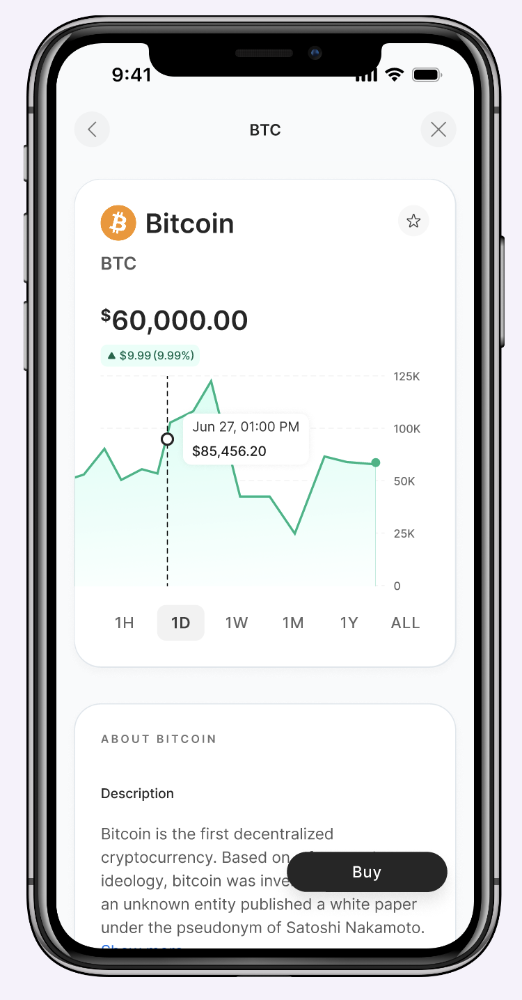
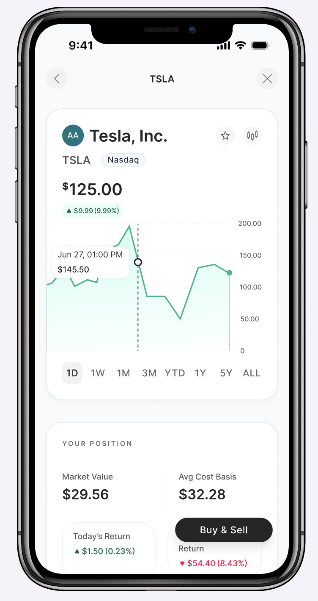
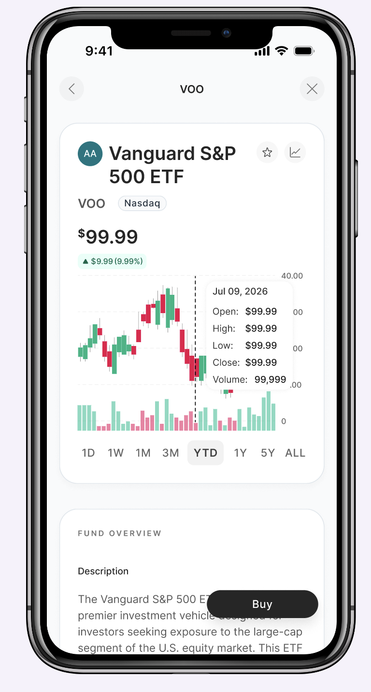
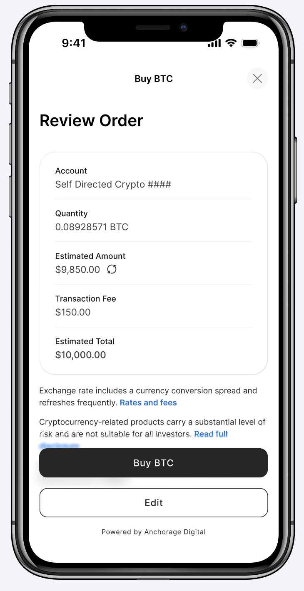
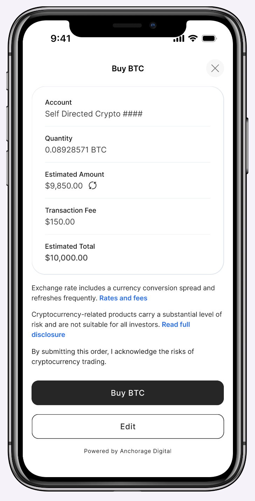
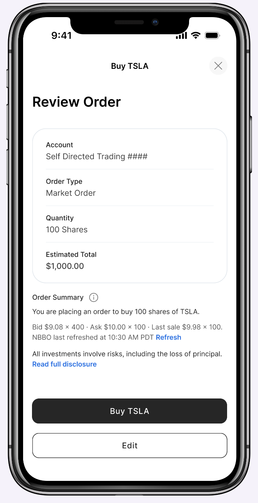

Designing one trading experience for stocks, funds, and Bitcoin.
Enhancing the existing stock, ETF, and mutual fund trading experience while building Bitcoin trading from the ground up.

Building crypto trading on top of an existing product.
Axos already had a self-directed trading product for stocks, ETFs, and mutual funds. My job was to enhance that existing experience while also designing Bitcoin trading completely from scratch, a real 0-to-1 project, since Axos had no crypto account or trading flow at all before this. The two had to share a search and feel like one product, even though one was already built and the other was starting from nothing.
This project was also part of something bigger. Axos has been moving from a legacy web UI and a 2.0 mobile UI toward a single 3.0 experience across both platforms, and trading was the perfect test case. Trading had only ever existed on mobile. This project was what brought it to web for the first time, while also being one of the first features built fully in the new 3.0 UI.
Where things got complicated.
- This had never existed on web before. Trading was mobile-only, so this project also had to prove out patterns for a platform that had nothing to build from.
- Two accounts, one interface. Search and research needed to work the same way for everyone, but buying only works if you have the right account.
- Customers shouldn't get stuck. If you only have one account, you should still be able to look around and try out order types before deciding to open the other.
- Order types depend on the asset, not on design. Stocks and ETFs support market, limit, stop, and stop-limit orders. Bitcoin and mutual funds only support market orders.
- Bitcoin comes with its own costs. Trading fees and daily limits apply only to crypto, since Axos holds it through a third-party custody account rather than directly.
- The rules kept changing. Order types, fees, and limits weren't locked in from day one.
- Customers already use Robinhood and Coinbase. Neither of those apps deals with two separate accounts or custody rules, so expectations were already set before they touched ours.
Letting people look before they commit.
Search works the same for everyone no matter which account they have. The account requirement only comes up when someone actually tries to place a trade. A customer with a trading account but no crypto account can research Bitcoin and even build out an order, but they'll see a prompt to open a crypto account once they go to confirm it. It works the same way in reverse for crypto-only customers. I wanted that moment to feel like a natural next step rather than a wall, so letting people try the order flow first, before asking them to open anything, was the whole point.
Same structure, different content.
The stock and crypto research pages look like siblings on purpose. Same chart, same buy panel, same layout, so if you know how to read one, you already know how to read the other. But what's underneath is different, because it has to be. Stocks get analyst ratings, earnings, dividend history. Bitcoin doesn't have any of that, so its page is just shorter instead of filled with empty sections pretending to be useful. The buy panel works the same way: crypto is just a buy or sell toggle and a dollar amount, while stocks also let you pick an order type, since a market order is one option among several, not the only one.


One flow, multiple levels of complexity.
Buying and selling share the same order-entry logic, just flipped. Bitcoin and mutual funds only support market orders, so that flow is just: type a dollar amount, review it, confirm it. Stocks and ETFs support all four order types, so I broke that flow into steps instead of one long form. Picking a stop-limit order, for example, walks you through setting the stop price, then the limit price, then how long the order should stay open, with the live price visible the whole time.
That step-by-step approach was a deliberate call for mobile specifically. A stop-limit order asks for several pieces of information at once, stop price, limit price, expiration, and showing all of that on a small screen in one form felt overwhelming and easy to get wrong. Breaking it into individual steps kept each decision focused and gave people room to actually think about what they were entering, instead of scanning a dense form and second-guessing themselves. On desktop, that same order fits into a single modal instead of separate steps, since there's enough screen space to take in several fields at once without it feeling overwhelming.
The costs that only apply to Bitcoin.
Because Axos holds Bitcoin through a third-party custody account instead of directly, crypto trades come with a transaction fee and a daily limit that stocks and funds don't have. I didn't want either of those to be a surprise, so the fee shows up clearly in the order review, and the daily limit shows up earlier, while someone's still typing in their amount, so they can see what they have left before they hit a wall.

Price means something different for each asset.
Crypto prices update continuously, so the review screen just shows the market price and an estimate. Stocks are different. Prices come from a real bid and ask that can go stale within seconds, so I added a timestamp and a manual refresh button, so people know exactly how current their quote is before they confirm. Both screens have a disclosure right above the confirm button, but the wording is different for each: crypto talks about volatility, stocks talk about the risk of losing your principal.


Working without a stable spec.
Two things made this hard at the same time. The vendor handling the crypto API didn't fully understand their own product yet, so their guidance on order types, fees, and limits kept changing and sometimes contradicted what they'd told us before. On top of that, the business hadn't fully decided what they wanted, so requirements could shift before I even finished designing for the last version.
I built the order-type and account logic as configurable rules instead of hardcoding anything, so when something changed, I could update one setting instead of redoing a screen. But honestly, the bigger part of the work was pushing back: asking the vendor to actually clarify their answers instead of taking the first one we got, and asking the business to commit to decisions instead of leaving them open. You can't design well around a moving target unless you're also willing to push on what's making it move.
Engineering is building against these flows now, with launch targeted in the next few months. Enhancing an existing trading product while building crypto from the ground up, on two separate accounts with vendor APIs that kept changing, meant building the shared parts as flexible rules instead of locking anything in too early. The stock and fund experience got better. The crypto experience exists at all because of this project.